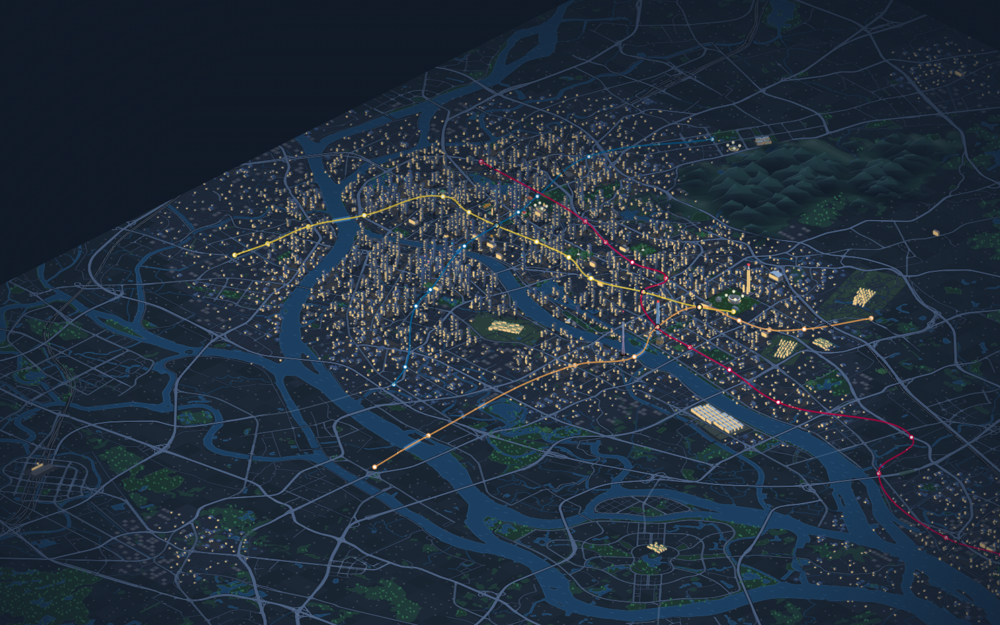
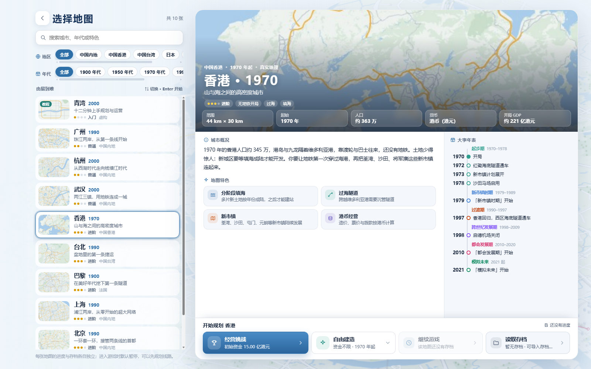
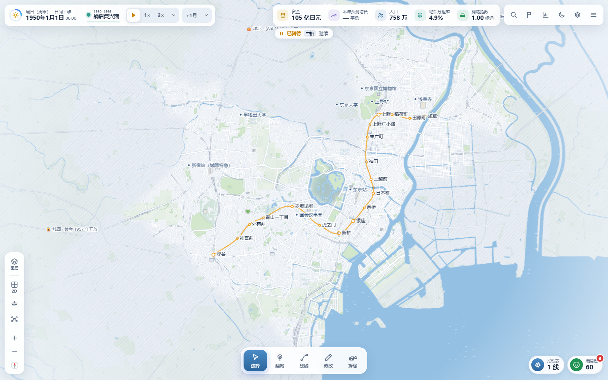

1985
新加坡
新镇可以先接，需求随后成长。围绕新镇连网、滨海湾与裕廊岛填海展开，加入兀兰延长线、F1 与综合度假区，并配置合同机制。
社区地图采用 OpenStreetMap 地理数据绘制道路、岸线与地标，按剧本设置人口、岗位、枢纽需求、开放年份与历史事件。史实目标用于校准关键年份、设施与票价；推测性扩张只作为可选挑战。
新镇可以先接，需求随后成长。围绕新镇连网、滨海湾与裕廊岛填海展开，加入兀兰延长线、F1 与综合度假区，并配置合同机制。
从深南大道到前海与龙岗。加入机场航站楼迁移、口岸开放、深圳北站启用与大运会等阶段内容，覆盖合同机制与分期成陆。
从紫金山下的老城接向长江两岸。加入青奥会、江北新区、南京南站与机场接驳，按阶段推进跨江与外围走廊。
从运河古城到金鸡湖两岸。覆盖吴江、昆山城区与苏南硕放机场，按剧本年份开放片区并接入沪宁方向的枢纽需求。
接手纽约骨干线网，连接哈德逊河两岸。可继承简化的地铁、PATH 与斯塔滕岛铁路骨架，也可从零建设；含行政区与街区地名。
广州延伸至佛山核心区、花都、从化城区、增城与南沙，补上黄埔至增城建设走廊；上海补充嘉定、青浦、松江、金山、奉贤、临港及昆山方向。
九座真实城市与青湾教程继续使用原版剧本参数，社区版在其之上叠加功能改进。
最直接的变化是建设流程：玩家可以先规划整条线路，再按需求和预算选择要开通的区段，并在运营后继续调整车站、运力和商业配置。
草案按线路归组并显示区段预算，由玩家选择先建哪些新建区段；同一条线可从不同端推进，自动编号避开已使用的线路名。
调整车站平面位置与标高，已建车站改造需付费；增加大型枢纽扩容，并允许在同一站间区段设置地下、地面与高架之间的高程变化。
车站总览查看商业预测并批量开发选中车站；列车界面集中显示可用车型与各线配车，可开启每月自动购买缺失列车。
车站详情分列进站、出站与站内换乘，展示站外换乘的步行距离、预计时间与客流。中国城市自动站名优先选用合适的道路名，社区名作为后备。
逐图核对开局票价、里程票制、起始资金与月拨款，按各城史实开局单独校准；保留社区版口径，不跟随原版 2.7 的整套经济重平衡。
OSM 底图绘制道路、岸线与地标；19 张地图逐图通过史实、票价、热点地区与引用完整性校验，并用无头浏览器全图开档验收。
宣传片展示深圳、苏州、新加坡与南京地图，以及分段开通、车站标高和位置调整、批量商业开发等操作。

2.5D 视图中的建筑、江面、地标与地铁线网（原版画面）

地图选择：城市概况与历史阶段年表

2D 地图中的街区、既有路网与开局线路
经济统计：财政、增长与交通效率
最新 1.3.1 加入铁路运营权，改进车队调度，并校准广州与重庆。
原作《城市与地铁》由 VinsonFung 开发并持续维护。Starry 为非商业社区修改版，与官方版本无关，也不代表原作者立场。
原版及社区改版均严禁商业使用：不得收费游玩、出售、投放广告、接受商业赞助或用于其他商业变现；免费发布、修改或改名不构成例外。
社区版新增与扩展的地图底图使用 © OpenStreetMap 贡献者数据，依 ODbL 1.0 提供；预处理地理数据库可从游戏仓库或部署版本获取。OpenCC-JS、pinyin-pro、Simple Icons 等组件保留各自许可。